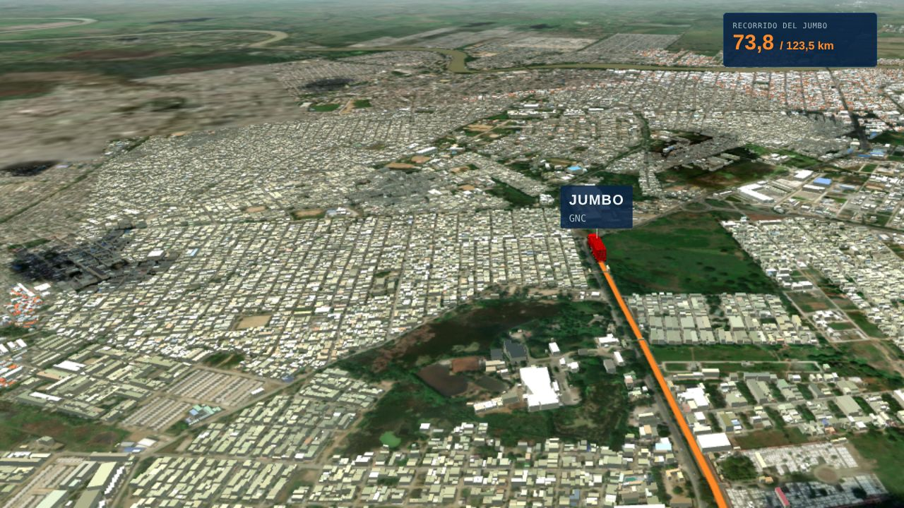
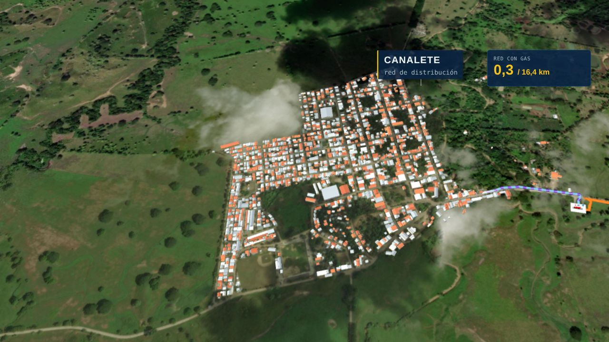
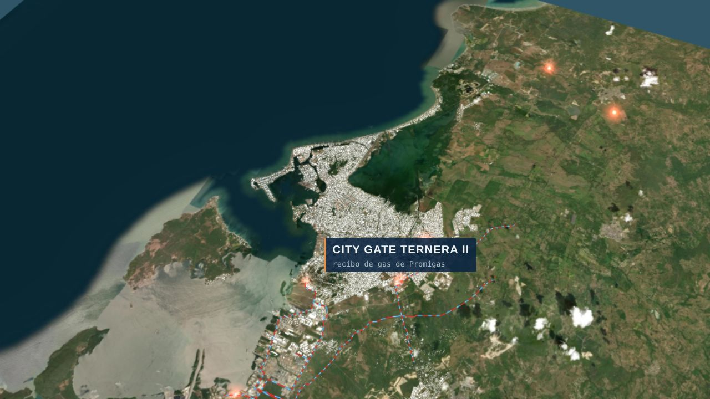
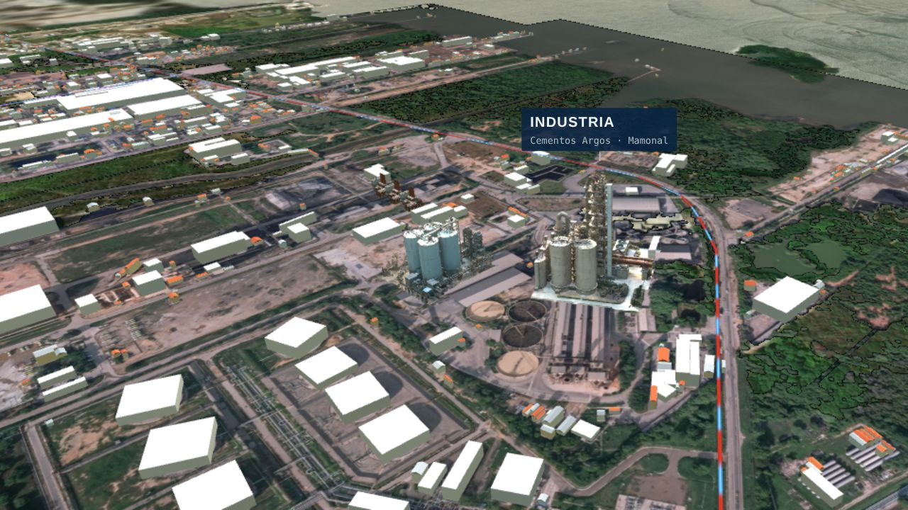
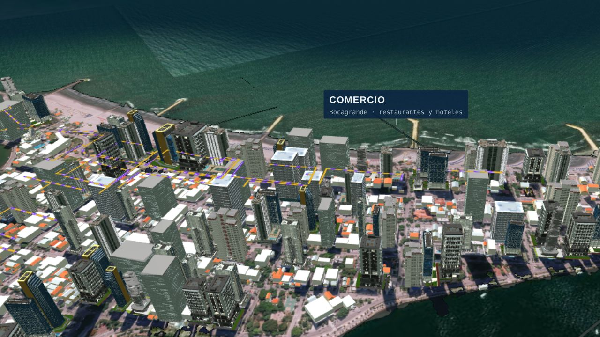
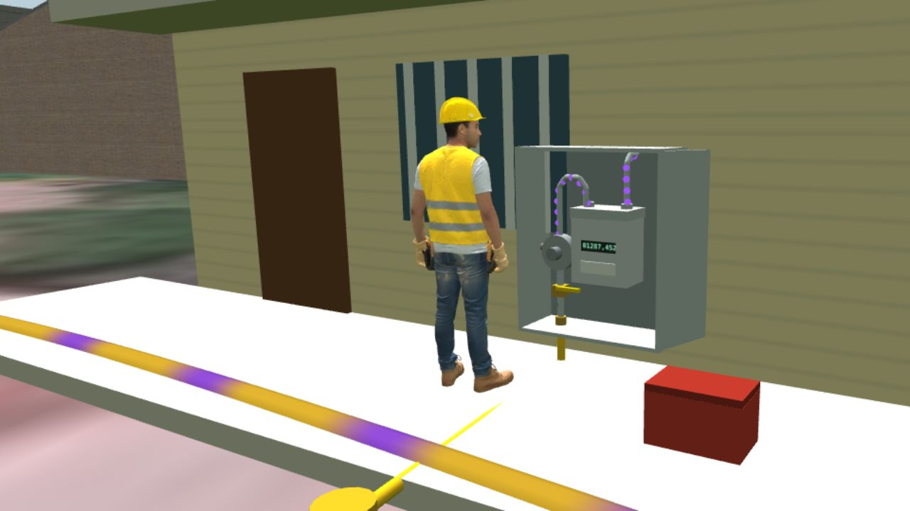
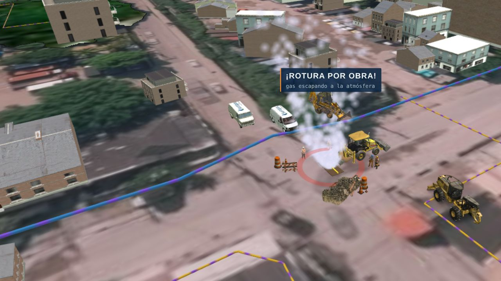
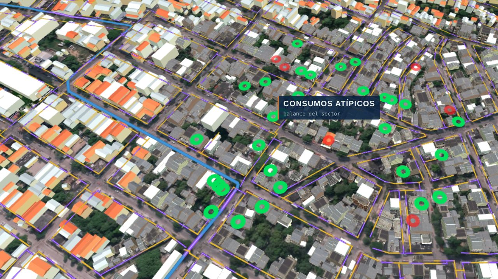
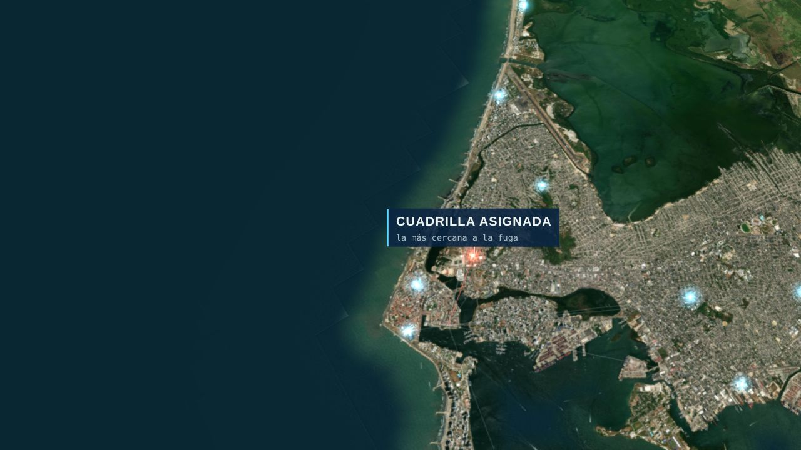
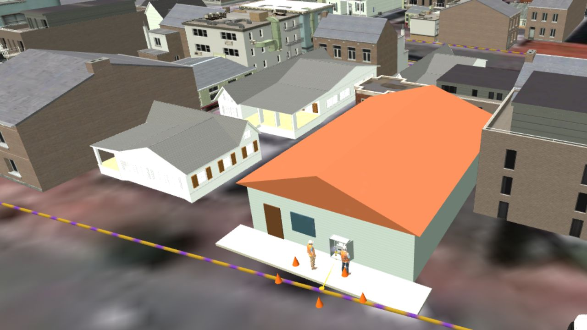

Promigas
Transporte
Gasoductos troncales de acero que cruzan la región.
≈ 1.200 psiDel gasoducto de transporte y las estaciones virtuales hasta la estufa de cada hogar: un recorrido por cómo operamos, cuidamos y medimos el gas natural en la región Caribe.
El recorrido
El gas viaja a alta presión por la red de transporte de Promigas. En cada etapa la presión baja, hasta llegar suave y segura a la casa de cada cliente.
Gasoductos troncales de acero que cruzan la región.
≈ 1.200 psiFiltra, mide, odoriza y reduce la presión para entrar a la ciudad.
≈ 250 psiAnillos que recorren barrios, comercios e industrias.
≈ 60 psiEl regulador entrega el gas a la presión de uso de la casa.
≈ 0,3 psiEn la estación La Lucha de Sahagún, operada con Petromil, el gas se comprime y se carga en módulos que viajan por carretera hasta Canalete. Allí una estación descompresora lo entrega a la red local, como si hubiera llegado por tubería.

Ver recorrido completo →
Ver recorrido completo →El gas sale de la red de transporte de Promigas y entra al City Gate, donde se filtra, se mide y baja de presión. Desde allí la red de acero lo lleva por los corredores principales de Cartagena.

Entrar a la red de Cartagena →Plantas como Cementos Argos usan el gas en sus procesos; en Bocagrande, hoteles y restaurantes cocinan con él. Además del suministro, ofrecemos servicios de mantenimiento industriales y comerciales.

Ver en 3D →
Ver en 3D →La red de polietileno llega hasta el centro de medición de cada vivienda: válvula, regulador y medidor.
Cada 5 años un inspector acreditado verifica la instalación y busca fugas (Res. CREG 059 de 2012).
Si la revisión encuentra un defecto, se genera una orden para corregirlo antes de que sea un riesgo.
Cambio de regulador, reubicación de medidores y mantenimiento de gasodomésticos.

Ver en 3D →Las obras de terceros son la principal causa de roturas. Entregamos planos, inspeccionamos los frentes de obra y acompañamos las excavaciones cerca de la red.
Frentes de obra · roturas
Ver en 3D →Comparamos el gas que entra a cada sector con el que registran los medidores. Cuando no cuadra, la medición avanzada y las inspecciones ubican la anomalía para normalizarla.
Pérdidas y fraudes
Ver en 3D →El cliente llama a la línea 164. Nuestras cuadrillas recorren la ciudad y TOA asigna la más cercana; si hace falta, el sector se cierra a distancia con una válvula automatizada.

Ver en 3D →
Ver en 3D →Cuadro de mando · Gerencia de Operaciones
Indicadores acumulados del año frente a la meta.
Surtigas · una empresa Promigas
Operación, prevención, medición y respuesta: un mismo compromiso con cada cliente.